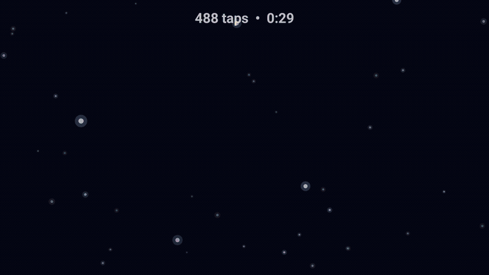
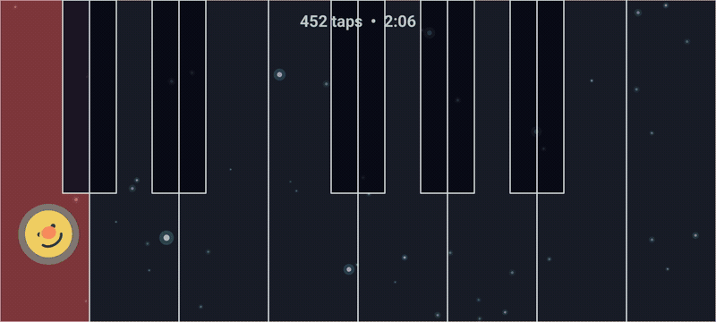
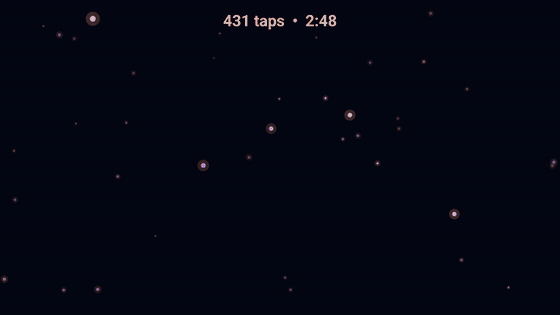

Basic
Soft fading trails without temporary shapes - simple, colourful and uncluttered.
A simple Android game for little hands
GlowPebbles turns every touch into gentle colour, movement and sound. It is made for calm, shared play, and works entirely offline.
It runs on Android devices going back more than 10 years, making it an ideal way to repurpose older hardware.

Ways to play
Visual play styles and sound styles can be combined, so you can find a gentle setup that suits your child and device.
Soft fading trails without temporary shapes - simple, colourful and uncluttered.
Bubbles, hearts, smiles, stars, letters and numbers bloom around each touch.
Gentle expanding rings replace trails and shapes for a quieter visual experience.
Every active finger paints a persistent trail with an easy button to clear the canvas.
Choose gentle random chimes, familiar nursery-rhyme melodies, or a full-screen Piano keyboard. Piano works over every visual play style, supports swipes and chords, and remains visible when sound is muted.
Change the colour scheme, trail size, and other preferences. Track how long your child is playing, or set a time limit for play sessions.
Screenshots


Download
Version 1.3.0-RC2 is the current replacement release candidate. It keeps Settings open during screen rotation and rotates retained Drawing canvases without stretching them.
SHA-256: 307b1edb02bdbdf7c3a982880c8287773c6412d8868fa4bb27ddb0535ab2313d
Install by sideloading
GlowPebbles is not currently distributed through an app store, so sideloading is required. Android's wording varies by device.
Help
Hold one finger in each top corner for three continuous seconds. Moving or lifting either finger cancels the gesture.
Open Settings, then hold Hold to exit for two seconds. If screen pinning is active, Android may also ask for your usual unpin action or device PIN.
Choose Piano under sound style. It adds a full-screen keyboard over Basic, Shapes, Slow ripples, or Drawing. Tap keys, slide between them, or play up to five notes together.
Screen pinning helps keep GlowPebbles in front during play and prevents accidentally opening swipe menus. Android controls how pinning is enabled and disabled; the wording varies by device.
In Settings, open Visuals and select the Low performance preset. Basic and Slow ripples are also less demanding on older hardware.
GlowPebbles supports Android 5.1 (API 22) and newer. The current public download is 1.3.0-RC2.
Privacy
GlowPebbles does not request Android permissions, connect to the Internet, show adverts, create user accounts, or include analytics. Drawings are never stored and settings stay on the device.
Visiting this support site is separate from using the app. This site is hosted by GitHub Pages and is subject to GitHub's privacy statement.
Privacy information last updated 14 August 2026.
Support
Use the guided form that best matches what you want to tell us. Reports are public, so please do not include names, email addresses or other personal information.
A free GitHub account is required to submit a report.